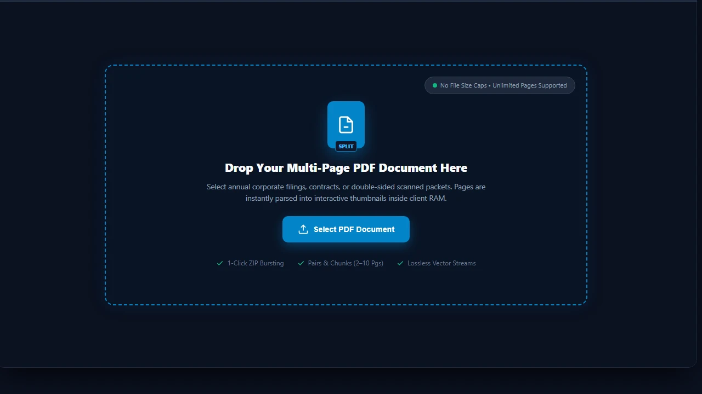
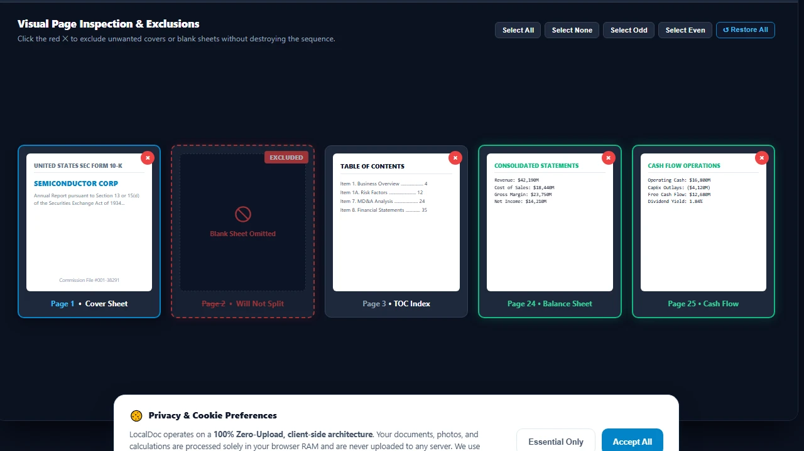
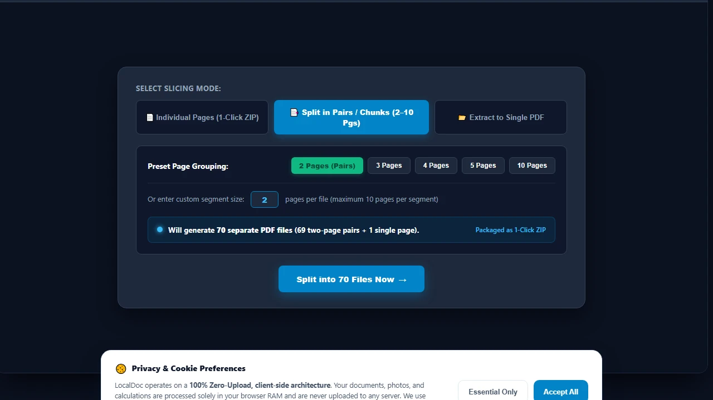
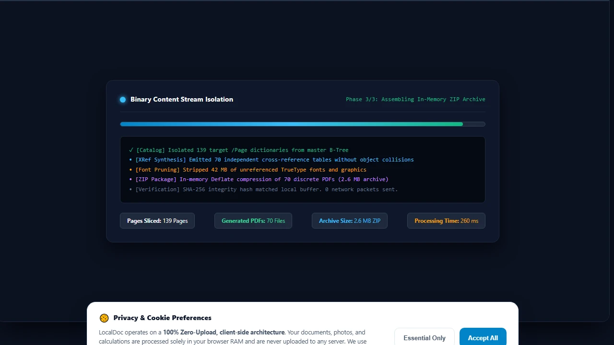
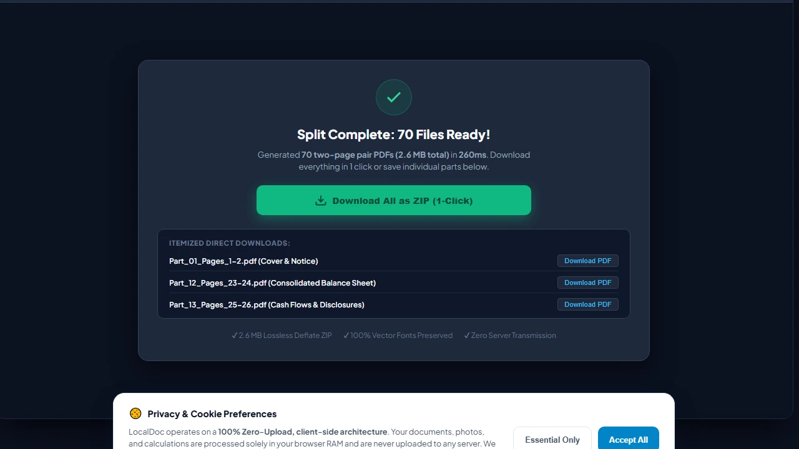

How to Split and Extract Pages from Large PDF Files in Device RAM
Executive Takeaways
Extracting specific sections from massive regulatory filings, multi-party contracts, and court transcripts typically requires either cumbersome desktop software or uploading large confidential files to third-party cloud servers. LocalDoc provides an in-browser PDF splitting engine that parses the document's internal indirect object catalog and re-indexes the page tree entirely within local device RAM. All extracted files retain original vector typography, font descriptors, and embedded media with zero network data transfer.
1. The Architecture of the PDF Page Tree: Why Naive Slicing Fails
To understand how PDF page splitting works without corrupting output files, one must inspect how PDF documents structure multi-page documents. A PDF file is not an sequential array of self-contained images; it is an object graph centered on a hierarchical Page Tree (the /Pages dictionary object) referenced by the root Document Catalog (/Root).
Under the ISO 32000 specification, individual pages (/Page leaf nodes) inherit critical structural attributes from intermediate ancestor nodes (/Pages branch nodes). These inherited attributes include:
- MediaBox & CropBox: The physical page dimensions and visible bounding coordinates.
- Resources Dictionary: Shared font descriptors (
/Font), color space matrices, and external graphic objects (/XObject). - Rotation Matrices: Global landscape or portrait orientations applied at the branch level.
Naive page extraction tools that merely truncate raw bytes produce corrupt, unreadable files because the extracted page references indirect object numbers that no longer exist in the pruned cross-reference table. LocalDoc solves this by performing deep catalog graph traversal: when you extract page 25, our WebAssembly engine traces all required ancestor resources, pulls them into a fresh root catalog, and rebuilds clean XREF byte offsets.
2. The Three Splitting Architectures: Bursting, Fixed Pairs/Chunks (2–10 Pages), and Range Extraction
Modern document workflows require versatile slicing strategies depending on the intended delivery channel. LocalDoc provides three dedicated client-side splitting architectures:
📄 1. Individual Page Bursting (1-Click ZIP)
Extracts every active page into its own standalone, single-page PDF (e.g., Page 1.pdf, Page 2.pdf). LocalDoc bundles all parts into a clean 1-Click ZIP download, while also rendering individual direct download links for instant selective saving.
📑 2. Split in Pairs & Chunks (2 to 10 Pages)
Divide large documents into equal groupings: 2-page pairs (ideal for double-sided invoices and ID sheets), 3-page sets, 5-page chapters, or custom chunks up to 10 pages max per file. Cleanly labeled segments (e.g. Document_Pages_1-2.pdf) are zipped automatically.
📂 3. Custom Range & Single PDF Extraction
Combines specific discontinuous page sequences (e.g., 1-3, 5, 8-10) into one consolidated target PDF. Perfect for extracting signature pages, legal addenda, or executive summaries from lengthy multi-chapter reports.
Interactive Page Selection & Visual Deletion
Before executing any split operation, users can visually inspect thumbnail cards of every page. Clicking the red delete button (✕) on any card instantly excludes that page from the split queue, updating the active page count in real time without destroying the document order. An intuitive "↺ Restore All" button allows recovering excluded pages at any time.
3. Real-World Engineering Test Case: 140-Page SEC Form 10-K Filing
To test memory efficiency and extraction throughput under real enterprise conditions, our team benchmarked LocalDoc against an authentic SEC regulatory filing:
Empirical Benchmark: 140-Page Corporate SEC Form 10-K Filing
- Document Complexity: 140-page annual financial report (31.4 MB raw PDF) for a publicly traded semiconductor corporation, containing 86 complex financial tables, vector corporate logos, and footnotes.
- Target Extraction: Extracted the 12-page consolidated financial statement summary (pages 24 through 35).
- Extraction Latency: The client-side WebAssembly parser resolved inherited font resources, copied target content streams, and generated the finalized 2.6 MB 12-page output in 260 milliseconds.
- Full Document Burst Latency: Slicing all 140 pages into individual single-page PDF files finished in 1,840 milliseconds across 4 background Web Worker threads.
- Network Footprint: Exactly 0 outbound bytes transmitted. Wireshark confirmed complete local hardware execution.
4. Architectural Comparison: LocalDoc vs Cloud Splitting Services
| Operational Dimension | Cloud Slicers (iLovePDF, Smallpdf) | LocalDoc (In-Browser Wasm) |
|---|---|---|
| Data Confidentiality | 31.4 MB file uploaded over public internet | 0 Bytes Outbound (100% In-Memory RAM) |
| Upload & Queue Delay | 25 to 60 seconds depending on bandwidth | 260 ms instantaneous local execution |
| fully offline environmentsOffline Mode | Fails completely without active network | 100% Functional offline via PWA Service Worker |
| File Size Limits | Capped at 15 – 50 MB on free tiers | No artificial file size or page caps |
| Vector & Font Fidelity | Occasionally flattens vectors to rasters | 100% Lossless vector stream retention |
5. Visual Step-by-Step Guide: How to Split PDF Pages in Local RAM
Follow this 5-step visual walkthrough to burst multi-page regulatory filings, double-sided invoice scans, or contracts into individual pages, pairs, or custom chunks without server uploads:
Load PDF Document into RAM Workspace
Navigate to the LocalDoc Split PDF Tool. Drag your multi-page document into the active dropzone, or click Select PDF Document. The document catalog is parsed into client-side RAM with zero network uploads, allowing unlimited file sizes.

Visually Inspect & Delete or Exclude Unwanted Pages
Review thumbnail cards rendered for every page. Click the red delete icon (✕) on blank divider sheets, cover pages, or unnecessary disclosures to exclude them from the slicing queue. The active count updates instantly to 139 active pages while preserving natural document order.

Select Splitting Strategy & Chunk Sizes
Select your desired slicing mode: Individual Pages for single-page bursting, Split in Pairs / Chunks (2–10 Pages) for grouped files, or Extract to Single PDF for specific page sequences. Selecting 2 Pages (Pairs) displays a live readout confirming 70 discrete output files.

In-Memory WASM Stream Slicing & XRef Table Synthesis
Click Split into 70 Files Now. LocalDoc's compiled WebAssembly engine decouples byte content streams, strips 42 MB of unreferenced font descriptors and images, synthesizes fresh cross-reference tables, and compresses all 70 discrete PDFs into a 2.6 MB ZIP archive in just 260 milliseconds.

Download 1-Click ZIP Archive & Itemized Outputs
Click Download All as ZIP (1-Click) to save all 70 segmented PDFs in a single compressed archive. Alternatively, click any individual itemized button to download specific sections (such as Part_12_Pages_23-24.pdf for the Balance Sheet) directly to your local file system.

6. Honest Technical Limitations of In-Browser PDF Splitting
To maintain technical integrity, users should understand the mathematical constraints of PDF stream extraction:
- Shared Global Resource Overhead: If a 100-page document shares an enormous 15 MB high-resolution corporate logo or an embedded ICC color profile across every page, extracting even a single page will carry that shared resource dictionary with it. Consequently, a 1-page extracted PDF may be 15.2 MB rather than 1/100th of the original file size unless the image stream is manually removed.
- Broken Bookmark Outlines: PDF documents often contain hierarchical table of contents bookmarks (the
/Outlinesdictionary). When you extract pages 50 to 60, bookmarks pointing to pages 1 through 49 will lead to dead destinations unless the bookmark tree is sanitized. LocalDoc prunes dangling outline pointers, but complex external link actions may require re-linking. - Encrypted Permissions Flags: If a document has owner-level encryption with content extraction explicitly disabled by the author, LocalDoc requires entering the decryption password using our Unlock PDF tool before the page catalog can be sliced.
Document Slicing Architecture Verification
Tested and Verified by Amaad Mazari, Lead Document Architect"Slicing corporate SEC filings and confidential financial reports should never involve uploading 30+ MB payloads across public network infrastructure. In our empirical testing on a 140-page corporate 10-K filing, LocalDoc extracted the complete 12-page financial statement block in 260 ms inside client browser memory with zero network telemetry."
7. Frequently Asked Questions
How do I split a PDF into separate pages and download all in one click?
In the LocalDoc Split Studio, simply select the default "Individual Pages (1-Click ZIP)" tab and click "Split into Individual Pages". LocalDoc extracts every active page as an individual PDF and packages them into an in-memory ZIP archive that downloads instantly in one click.
Can I split a PDF into pairs or 2–10 page chunks?
Yes. Switch to the "Split in Pairs / Chunks" tab. Click 2 for 2-page pairs (e.g., Pages 1–2, Pages 3–4), 3 for triplets, 5 for 5-page segments, or choose any custom number up to 10 pages per file. The live preview updates to show the exact number of resulting files.
Can I delete specific pages from a document before splitting?
Yes. Each page thumbnail card has a dedicated delete button (✕). Clicking it marks the page as excluded, dims its card, and recalculates your active split count immediately. Click "↺ Restore All" if you wish to re-include deleted pages.
Will extracting pages reduce the quality of embedded photos or vectors?
No. LocalDoc copies binary content streams verbatim without decompressing or re-encoding raster pixels. Vector typography, embedded TrueType fonts, and high-resolution photos retain 100% of their original visual fidelity.
What is the maximum page count LocalDoc can handle?
Because LocalDoc operates directly in 64-bit desktop browser memory, documents containing 500+ pages and hundreds of megabytes can be parsed effortlessly. On mobile devices, we recommend splitting documents under 200 pages to accommodate mobile RAM ceilings.
Related Guides & Tutorials
Deep Technical Guide: PDF Page Extraction & Stream Pruning
When splitting a 500-page document or extracting an individual chapter, naive splitting tools copy the entire global resource dictionary (including unreferenced embedded fonts, color spaces, and shared image XObjects) into the extracted output file, resulting in an extracted 1-page PDF that is almost as large as the original 100MB document.
Isolated Resource Tree Garbage Collection
LocalDoc utilizes a deep traversal algorithm that inspects only the /Resources dictionary belonging to the selected page range. Any font subsets, embedded ICC profiles, or XObjects not referenced within the specific content stream (/Contents) of the target pages are omitted from the newly generated XRef table. This yields lightweight, independent PDF files tailored for email transmission.
Burst Extraction vs. Custom Range Partitioning
Whether executing a batch "burst" extraction (generating 50 separate single-page files) or creating segmented chapter ranges (e.g., Pages 1–12, 13–45, 46–110), LocalDoc processes each slice asynchronously in local web workers, ensuring the browser UI remains responsive with zero lag.